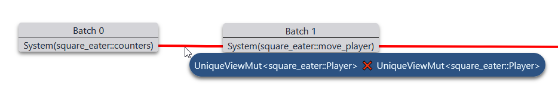
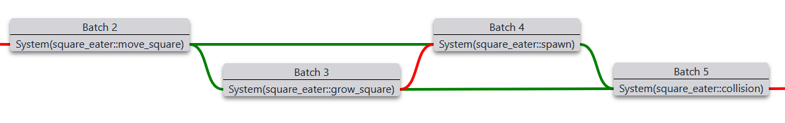
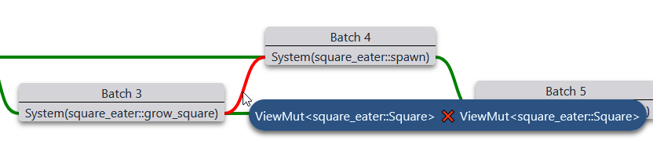

Visualizer
The visualizer is a tool to better understand your workloads.
Setup
You can follow along using the square_eater example by directly going to the visualizer page and clicking on "Example".
For your own workloads, you'll need to create a .json file containing all workloads you want to inspect.
You'll need the serde1 feature on shipyard and serde_json as a dependency.
Then you can run this snippet after the workloads have been added to the World.
#![allow(unused)] fn main() { // Add your workloads to the World anywhere before std::fs::write( "drop_me.json", serde_json::to_string(&world.workloads_info()).unwrap(), ) .unwrap(); }
Simply drag and drop the generated .json file to the visualizer page.
Workload selection
Workloads are selected at the top left of the page when you have more than one.

Access Info
This first panel lists all systems and components present in the selected workload.
For the square_eater example this would be this list:

System
Clicking on a system highlights the components it borrows.
In red the exclusive access, in blue the shared ones.

Component
The same can be done on components to highlight all systems that borrow them.

Both of these features can be used to identify forced sequential access.
For example AllStorages prevents parallelism, maybe some systems borrowing it could instead borrow individual storages.
Editor
This second panel presents the different batches that compose the workload.
A batch is a list of systems that will attempt to run in parallel when executed.
There is no ordering within a batch.
Implicit ordering
When a system isn't ordered manually, the scheduler will use the source code as reference in addition to the storages borrowed to create an order.
For example, square_eater defines its systems like this:
#![allow(unused)] fn main() { ( counters, move_player, move_square, grow_square, spawn, collision, clean_up, check_end_floor.into_workload_try_system().unwrap(), render, ) .into_workload() }
No manual ordering, so the scheduler will try a top to bottom order.
Sadly, no parallelism can happen in this workload. Each system is assigned a different batch.
You can inspect which type made a system part of a different batch by hovering the red link between systems.
In the case of counters and move_player, we can see that they both borrow Player exclusively.

Manual ordering
Using tag, before_all or after_all functions allow us to exit the source code ordering.
For this example, we'll slightly modify the square_eater workload:
#![allow(unused)] fn main() { ( counters, move_player, move_square, grow_square.after_all(move_square).before_all(collision), spawn.after_all(move_square).before_all(collision), collision, clean_up, check_end_floor.into_workload_try_system().unwrap(), render, ) .into_workload() }
This modification doesn't affect the order, we simply force grow_square and spawn to be between move_square and collision.
It may not change the end result, but the constraints between the systems changed.

If we inspect one of the green link, we find the same information we just added.

You may also have noticed a red line in the middle.
Using manual ordering doesn't opt out of storage access check (as it could lead to UB).

Controls
Controls are available at the bottom right of the page.

The slider is the zoom level, it can also be changed with the mouse wheel (without any modifier key).